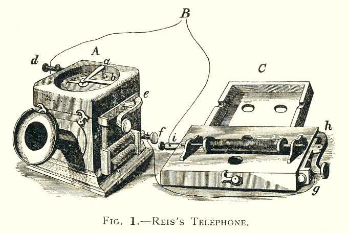

This website is designed to be an entry point into the world of sonification. It includes techniques used, useful learning resources and research within the field. It also explores relevant projects and contains interactive demos available for iOS.
Visual representations are considered to be the usual method for interpreting large datasets. Generally, visual representations consist of graphs, diagrams or spectrograms. However, we do not interpret information in the world using only vision and hearing is one of the many human senses used for interpretation.
The earliest use of sound to convey information is thought to have existed within Ancient Egypt. According to Brown \cite{Boyd}, Ancient Egyptian auditors compared the ‘soundness’ of commodities moving in and out of stores to ensure fair trading. While this is a primitive example, the acknowledgement of sound to convey information and research into the field of sonification has only been around for roughly 25 years \cite{Worrall}. Visual representations have been used for a longer period of time than auditory representations due to audio technology only developing since the 19th century such as the invention of the Reis Transmitter by Johann Philipp Reis in 1862 \cite{aes}. The Reis Transmitter, shown in figure \ref{fig:reis}, is regarded as one of the earliest developments of a telephone-like device \cite{notBell}.
Visual displays have been around much longer than computer audio cards. The earliest visual monitors date back to the 1970s, around 20 years before the first audio cards in the 1990s and further real-time sound processing capabilities in the 21st century.
The terms ‘sonification’, ‘auditory display’ and ‘data sonification’ are used interchangeably within research articles and journals. All three terms are used to express methods to represent information as sound \cite{Worrall}.
There have been many attempts to define sonification. Notably in 1999, Gregory Kramer defined sonification as:
"The use of non-speech audio to convey information. More specifically, sonification is the transformation of data relations into perceived relations in an acoustic signal for the purposes of facilitating communication or interpretation."
Speech audio is likely discarded in this definition to differentiate between techniques related to speech-related practices. Such as linguistics and text-to-speech communication. However, Thomas Hermann \cite{Hermann} and David Worrall \cite{Worrall} argue that there is no necessity to remove speech audio. This is because while speech is not directly sonification itself, speech can be data-driven to become a sonification tool. Worrall defines data sonification as:
“Data sonification is the acoustic representation of informational data for relational non-linguistic interpretation by listeners, in order that they might increase their knowledge of the source from which the data was acquired.”
Worrall’s definition is more refined and is a modern accepted definition of what he refers to as Data Sonification. Hermann suggests there are two requirements for a sound to be called a sonification \cite{Hermann}:
Unfortunately, the usefulness of auditory displays are often questioned and they are still considered a ‘gimmick’ by some. This website does not intend to change opinions but rather introduce the techniques to young engineers and encourage sonification use as an analysis tool.